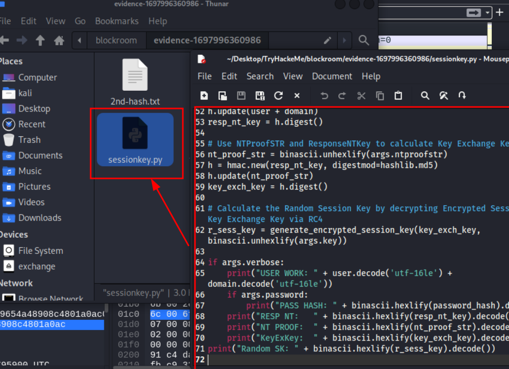
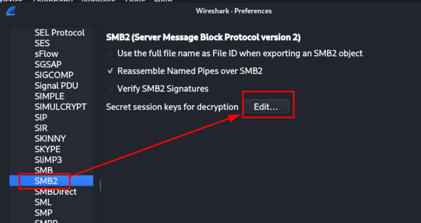

Aufgabe 1
| What is the username of the first person who accessed our server?
In der entpackten Archivdatei sind 2 Dateien: lsass.DMP und traffic.pcapng
LSASS (Local Security Authority Subsystem Service) ist ein Windows-Prozess, der für die Verwaltung von Sicherheitsrichtlinien, die Authentifizierung von Benutzern und die Speicherung von Anmeldeinformationen im Arbeitsspeicher zuständig ist.
Eine .dmp-Datei (Dump-Datei) ist eine Speicherabbild-Datei, die den Inhalt des Arbeitsspeichers eines Prozesses oder des gesamten Systems zu einem bestimmten Zeitpunkt enthält, meist für Debugging oder Fehleranalysen.
Wir können daraus Nutzerdaten extrahieren.
Starte mit dem Öffnen der .pcapng-Datei in Wireshark.
Den Nutzer und damit die Lösung der ersten Frage, kannst du in der Zeile der NTLMSSP Authentifizierung sehen:

Lösung anzeigen (ACHTUNG: SPOILER)
mrealman
Aufgabe 2
| What is the password of the user in question 1?
Für diese Aufgabe habe ich pypykatz verwendet.
Installiere pypykatz indem du eine venv mit Python erstellst
(python3 -m venv .venv), diese aktivierst (source .venv/bin/activate) und
danach mit pip install pypykatz das tool innerhalb der venv installierst.
Anschließend kannst du dir mit der Option -h die Hilfe anzeigen lassen:
Hier ist die Option lsa die Richtige für unser lsass.dmp file.
Mit dem Befehl: pypykatz lsa minidump lsass.DMP lassen sich nun wichtige Informationen
aus der Datei extrahieren.

Dieser NT-Hash kann nun mit Crackstation oder einem Tool wie John-The-Ripper gecracked werden.
Ich werde in diesem Durchlauf mit John-The-Ripper versuchen diesen Hash zu knacken.
Das Format für John sieht so aus: Benutzername:NT-Hash
Zuerst erzeuge ich mir eine neue Text-Datei (nt-hash.txt) mit dem folgenden Inhalt:
mrealman:$NT$1f9175a516211660c7a8143b0f36ab44
Diese Nutze ich nun für John mit folgendem Befehl:
john --format=nt nt-hashes.txt
Wenn die Standard-Wordlist nicht funktioniert, bzw. das Passwort nicht beinhaltet, kann mit folgendem
Befehl eine andere Wordlist verwendet werden:
john --format=nt --wordlist=/pfad/zu/deinem_wörterbuch.txt nt-hashes.txt
Hier der Befehl mit der Rockyou.txt Wordlist und dem erfolgreichen Crackdurchlauf:
Mit Crackstation funktioniert das Cracken des NT-Hashes ebenfalls:
Lösung anzeigen (ACHTUNG: SPOILER)
Blockbuster1
Aufgabe 3
| What is the flag that the first user got access to?
Was haben wir bisher?
Benutzername -> Gefunden in traffic.pcapng
Domäne -> Gefunden in traffic.pcapng
NT-Hash oder Passwort -> Gefunden in lsass.DMP
Mit diesen Informationen können wir in Wireshark entsprechende SMB Pakete entschlüsseln, indem wir das Passwort hinterlegen.
Dazu in Wireshark auf Edit -> Preferences -> Protocols und in der Liste NTLMSSP selektieren und das zuvor gefundene Passwort eingeben und unten bestätigen:

Durch die Entschlüsselung der Session, haben wir Zugriff auf die Inhalte der SMB Pakete des Nutzers.
Hier fällt eine .csv Datei auf, die öfter genutzt wurde
Ich nutze nun einen Filter, um evtl. weitere .csv Dateien zu finden. In diesem Beispiel, gibt es recht wenig Datenpakete. In der Realität haben Paket-Mitschnitte mit Wireshark mehrere Tausend Zeilen an Einträgen.
Die gefundene .csv Datei, kann über File -> Export Objects -> SMB exportiert werden.
Ich speichere diese als export.csv.
Diese exportierte Datei kann nun mit einem Texteditor geöffnet werden und der Inhalt eingesehen werden. Hier ist auch die Lösung der 3. Aufgabe zu sehen:
Lösung anzeigen (ACHTUNG: SPOILER)
THM{SmB_DeCrypTing_who_Could_Have_Th0ughT}
Aufgabe 4
| What is the username of the second person who accessed our server?
Die Lösung der Aufgabe ist in der zu Beginn geparsten lsass.dmp Datei weiter unten zu finden:
Lösung anzeigen (ACHTUNG: SPOILER)
eshellstrop
Aufgabe 5
| What is the hash of the user in question 4?
Diese Lösung ist ebenfalls in der gleichen Aufgabe unter NT:XXX zu finden:
Lösung anzeigen (ACHTUNG: SPOILER)
3f29138a04aadc19214e9c04028bf381
Aufgabe 6
| What is the flag that the second user got access to?
Da wir den Hash und den Nutzer haben, kann nun eine 2. Textdatei mit dem Hash zum Cracken mit John-The-Ripper angelegt werden.
Allerdings führt dieser Weg hier nicht zum Erfolg. Weder Crackstation, noch John-The-Ripper können den NT-Hash cracken:

Folglich versuche ich einen anderen Ansatz. Über die .pcapng-Datei können wir, zusätzlich zum geparsten Hash, folgende Informationen zum Nutzer eshellstrop extrahieren:
- Nutzer: eshellstrop (aus pcapng)
- Domain: WORKGROUP (aus pcapng)
- NTProofStr: 0ca6227a4f00b9654a48908c4801a0ac (aus pcapng)
- EncryptedSessionKey: c24f5102a22d286336aac2dfa4dc2e04 (aus pcapng)
- NT-Hash: 3f29138a04aadc19214e9c04028bf381 (geparsed aus dmp-Datei)
Mit diesen Informationen können wir ein Python Skript nuten, dass auf Github zur Verfügung steht: Python Skript
Diesen Inhalt der Datei über die Code Ansicht Github kopieren und auf der Kali Maschine eine neue Datei mit .py Endung erzeugen.

Der Befehl wird nun aus den oben stehenden Informationen aufgebaut und ausgeführt.
Folgendes ist die Ausgabe:
Wichtig ist hier der Random Session Key. Mit diesem und der Session ID können wir die notwendigen Pakete entschlüsseln. Im Folgenden zeige ich wie.
In Wireshark suchen wir uns die Session ID für den Nutzer eshellstrop
Diese ID bekommen wir aus dem gleichen Paket (Nr.82), aus dem wir die vorherigen Daten auch schon entnehmen konnnten. Auch wieder unter dem SMB2 Bereich:
Damit dieser Session Key verwendet werden kann müssen die Bytes "umgedreht" werden. Denn Wireshark zeigt die Informationen im little-endian Format (von klein nach groß)
Das heißt ein Byte = 1 HEX Wertepaar oder in dem Session Key ein Zahlenpaar, bestehend aus 2 Ziffern.
Aus 0x 00 00 10 00 00 00 00 45 wird 0x 45 00 00 00 00 10 00 00
Diesen Big-Endian Format Key können wir nun in Wireshark wie folgt nutzen, um die SMB Pakete zu entschlüsseln:
Dazu in Wireshark wieder auf Edit -> Preferences -> Protocols und in der Liste diesmalSMB2 selektieren und Edit... klicken

Danach die Session-ID im Big-Endian Format eigeben und den zuvor extrahierten RandomSK, anschließend unten bestätigen und Apply klicken:
Nun wieder über File -> Export Objects -> SMB die neue .csv exportieren.
Diese kann nun im Texteditor geöffnet werden und die letzte Flag entnommen werden:
Lösung anzeigen (ACHTUNG: SPOILER)
THM{No_PasSw0Rd?_No_Pr0bl3m}
Bei Fragen gerne Rückmeldung an mich.
k-kaufhold